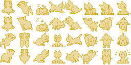

Ocelot.zip
Make your media responsive and fast
Welcome to Ocelot.zip, the purr-fect place to manage your files with a feline touch! Our cat-themed file manager combines functionality with fun, making file organization a delightful experience. Whether you're uploading, renaming, or creating new folders, Ocelot.zip ensures your files are always just a whisker away. Get started now and let your files prowl in style!